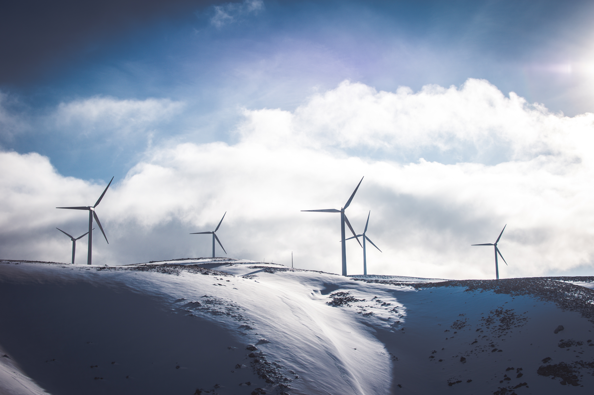

Wind Energy in the United States
Wind Power: Ineffecient and expensive bird killing machines or the renewable technology that can save our planet?
Renewable energy is coming. The U.S. Energy Information Administration states that renewables account for nearly 13.4% of electricity production in the United States. While this number doesn’t seem substantial, it is growing every year as the United States is constantly looking for alternatives fuels to lower carbon emissions and curb growing fears of climate change. For this percentage to grow, governments, corporations, and people need to continuously invest in renewable energy in some way, shape, or form. However, this can become difficult as many different groups debate the pros and cons of different renewable energies in terms of economics, electricity production, efficiency, externalities, and how they compare to our already developed fossil fuel infrastructure.

Over the past few decades, wind has been a source of energy that America continues to push for. Wind energy harnesses the power of nature to spin large propellers, which then spin a generator creating electricity. Creating electricity through wind power has many benefits: it is a clean fuel source, it does not use water, the power is inexhaustible, and it is a domestic energy.
One benefit of wind energy is that it doesn’t produce carbon emissions and cause pollution. This is not only good for the health of locals who live by wind farms but it could save national dollars by limiting environmental damages and lowering healthcare costs with less air pollution. The Wind Vision Report has stated that these savings are estimated to be $400 billion through 2050. Another environmental benefit is that wind power does not use any water unlike conventional electricity sources. Producing electricity from nuclear, coal, or gas-fired power requires various amounts of water for electricity to be produced. While this is definitely an environmental benefit and argument over fossil fuels, it should be noted that the percentage of state water used by fossil fuel plants is marginally small compared to other uses such as agriculture. This means that the water savings is only fractionally beneficial.

Another practical benefit of wind energy is that it is 100% renewable. Unless the sun explodes, we will always have wind energy. Wind is created by uneven heating and temperatures on the earth’s surface, a phenomenon that is always occurring. With this in mind, wind is a sound and reliable investment because the source of fuel can technically never run out. This is important when comparing wind energy to fossil fuels. The world will eventually no longer have raw fossil fuels so it is nice to know we have an alternative when that time comes. However, with the recent boom of fracking and the findings of extremely large shale natural gas deposits, it looks like we will be able to utilize natural gas and fossil fuels for a longer period of time than previously expected. Since there is such a large supply it is much cheaper than wind energy thus negating some of the economic benefits that advocates for wind claim. There is something to be said that the wind energy does stimulate the economy in some aspects, particularly within manufacturing. Wind towers and turbines are extremely large, as well as very design and engineering intensive. As the industry grows, it will continue to employ many different people in a vast array of different industries.
However, there are also many downsides such as cost and economics, noise and view disturbances, damage to local wildlife, and the location of wind turbines are often remote and far away from cities that need electricity the most. The biggest issue surrounding wind energy is the cost. Plain and simple, wind energy is not as economically feasible as fossil fuels, though this could be subject to change in the future. The problem is understanding the levelized cost of energy (LCOE) or how much energy costs per megawatt. Countless organizations have published and reported a vast array of different numbers making it very hard for everyday Americans to fully understand the economics. For example, the investment firm Lazard, conducted research and claimed electricity generated by wind was around $37 to $81 per megawatt hour. However, another study conducted at Texas tech claimed that it was closer to $149. Looking deeper into this research, one study accounts for winds unreliability, capacity factor, as well as government subsidies and tax credits. While the unreliability is certainly an issue of wind energy and other renewables, if we are comparing wind based on these criteria we need to do the same to fossil fuels. Fossil fuel production has a significantly higher capacity factor, but the fossil fuel industry has also taken billions of dollars from subsidies as well but isn’t typically taken into account when calculating LCOE.
Another economic concern of wind is how its development is being funded. Wind energy has received massive subsidies under the Obama Administration to keep pace with international environmental goals. Through a subsidy, the consumer is essentially paying twice for the product or service. In this instance, consumers are paying their energy bill while also paying for the wind energy production through taxes that are then given as subsidies. The biggest wind subsidy is the Production Tax Credit that was created under former president Obama. The PTC changes how expensive wind energy is per megawatt hour and with politicians disagreeing and flip flopping on their support of PTC, it creates an instability in the price of already fluctuating wind electricity prices. PTC subsidies go towards the construction of the wind farms, as well as the transmission lines to homes and cities. Since wind is typically far away from electricity poor cities, these transmission lines are typically long and expensive. Fiscal conservatives and nationalists have also claimed that a significant portion of subsidies, roughly $7 billion, have gone to foreign companies. They say that this hurts American jobs and isn’t contributing to the growth of the economy and American GDP.
There is also concern with bird populations and how they are affected by wind turbines. There are different numbers of bird deaths by wind turbine depending on where you look. Wind advocates claim that the number is close to 300,000 while an “environmental research group” funded by Exxon Mobil say closer to 500,000. Regardless, hundreds of thousands of birds seem like a tremendous amount and paints the picture that wind turbines are simply bird killing machines. This is simply a false narrative. The reason being, is that there are between 10 billion to 20 billion birds in America at any given time, making a few hundred thousand deaths irrelevant. In a New York Times Article, scientists estimated that 13.7 million birds die every day. This can be caused by natural causes, predators, pesticides, powerlines, buildings, and yes even wind turbines. The point is that this is only a marginal percentage of total birds.
Wind energy is a difficult topic mostly due to today’s political and social climate. Environmentalists with good intentions and lack of knowledge try to push wind energy without looking at economic facts in order to release the grip America has on fossils fuels, while on the other side, oil and gas funded organizations guised as environmental and political think tanks, bring up valid points but do so with cherry-picked stats and questionable intentions. The government has a big role in regulating energy and protecting its citizens from externalities. However, I believe that the government shouldn’t have as much of a role in deciding the types of energy that should be used. By giving subsidies and tax credits to wind companies, the government is creating an artificial market that is harmful to the energy industry and the economy. I feel that the government should focus more of its time and resources to promote education and innovation within the renewable energy industry. Only when bright young entrepreneurs and engineers develop a wind power that is more economically viable compared to fossil fuels, is when we can truly move forward towards powering our country completely with renewables.